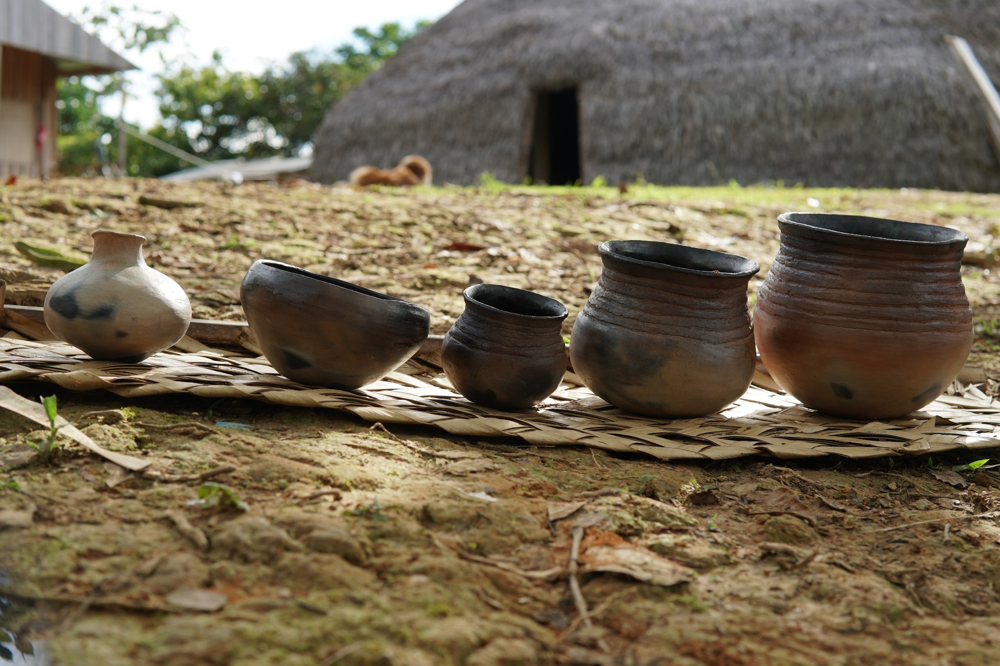
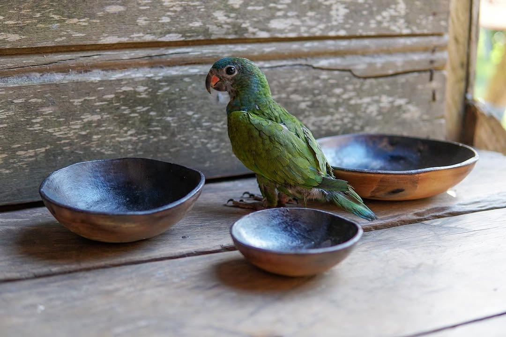
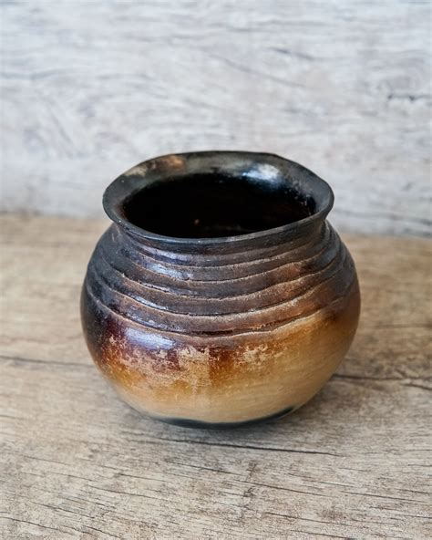
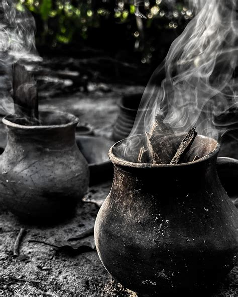

Criações de mulheres Marubo na TI Vale do Javari, Amazonas.
Nas mãos carregamos saberes do nossos ancestrais, cada traço é reverência ao sagrado que transcende o tempo.




Quem somos?
O Povo Marubo habita as sub-regiões do alto e médio rio Ituí e alto e médio rio Curuçá, no Vale do Javari. Falantes da língua pano são considerados a segunda maior população dessa região, com cerca de 1.905 indivíduos.